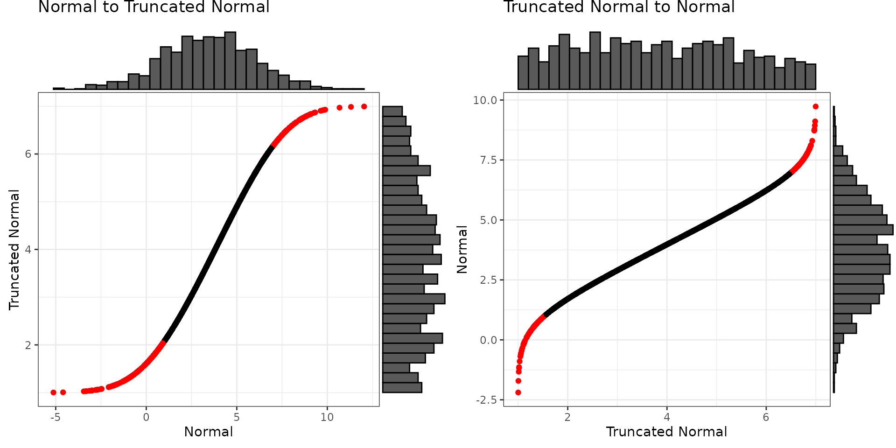
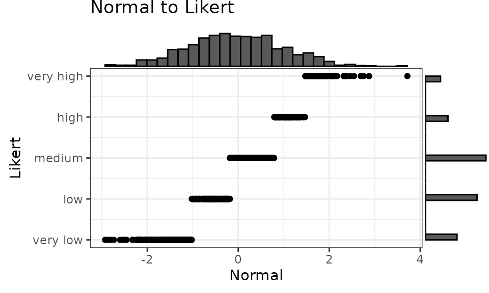
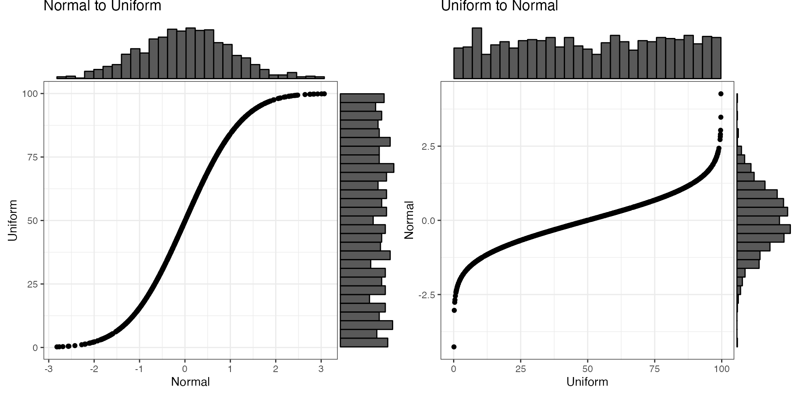
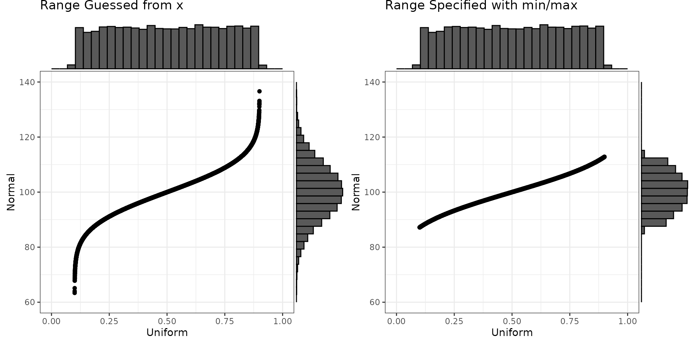
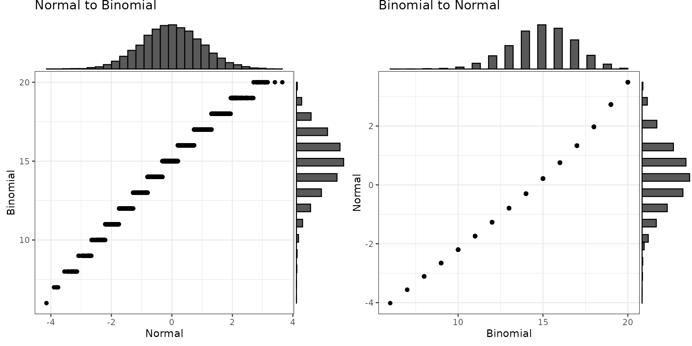
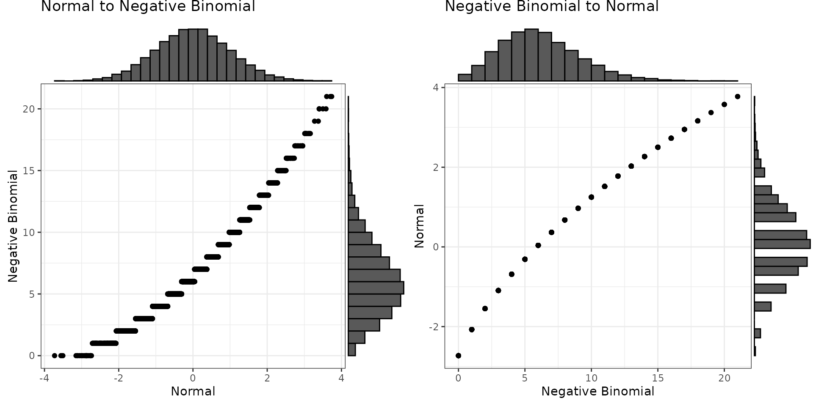
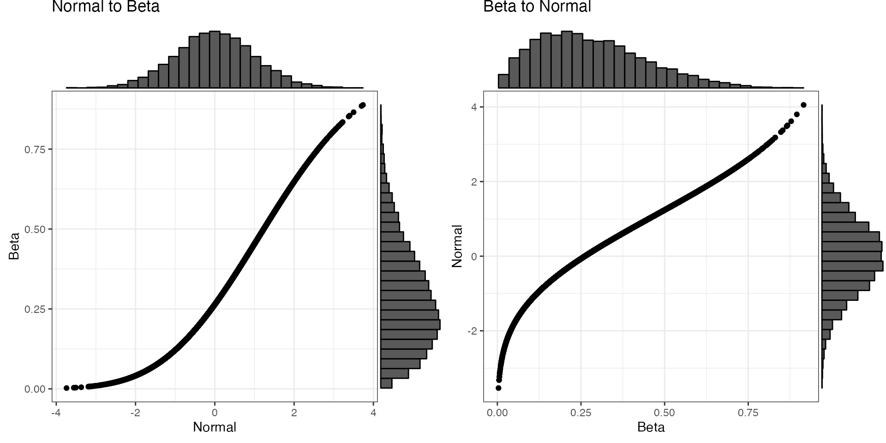
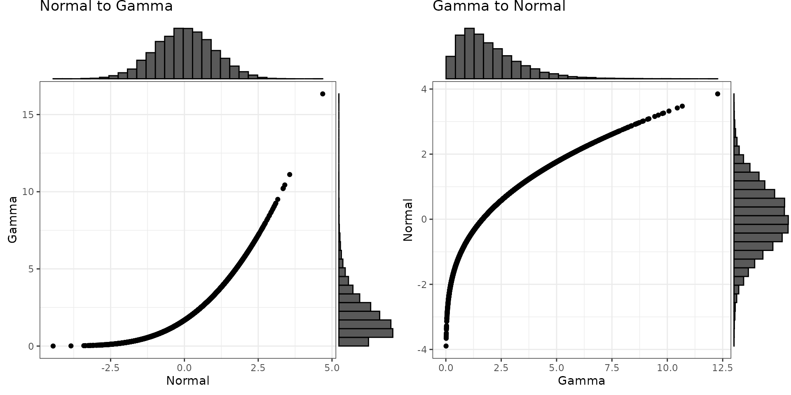

For now, sim_design() only simulates multivariate normal
distributions. You can use the conversion functions to convert values
between distributions.
Truncated normal
Imagine you’re trying to simulate each participant’s mean score on 50 trials with 1-7 Likert responses and you only have the mean and SD from a previous paper to go on. simulating from a normal distribution is likely to give you impossible values, but you can convert to a truncated normal distribution.
Convert between a normal distribution with a mean of 3.5 and SD of 2.5 and a truncated normal distribution ranging from 1 to 7 with the same mean and sd. The red values below are outside the truncated range on the unbounded normal scale.
mu = 3.5
sd = 2.5
min = 1
max = 7
x_n <- rnorm(1000, mu, sd)
y_t <- norm2trunc(x_n, min, max)
x_t <- rtruncnorm(1000, min, max, mu, sd)
y_n <- trunc2norm(x_t, min , max)
If you omit the min and max values for trunc2norm(), it
will set them outside the min and max of the data, but this can be
really inaccurate, so set them yourself.
Likert
You can convert a normal distribution to any sample distribution if you can specify the probability of each level. You can specify probability as counts or proportions. If you use a named vector, the output will be a factor with those named levels.
mu = 0
sd = 1
prob = c('very low' = 50,
'low' = 80,
'medium' = 100,
'high' = 40,
'very high' = 20)
x_n <- rnorm(1000, mu, sd)
y_l <- norm2likert(x_n, prob)
Faux also provides distribution functions for Likert distributions that you define with the probabilities of each value.
rlikert
rlikert() returns a random sample from a distribution of
Likert levels with the specified probabilities.
If you set prob as a named vector, it will return a
vector of factors.
If you set prob as an unnamed vector, it will return a
vector of integers.
Specify labels if prob is not named and you
don’t want a vector of integers starting with 1. If the labels are
numeric, it will return a vector of numbers. If the labels are
characters, it will return a vector of factors.
dlikert
dlikert() returns the density function.
plikert
plikert() returns the probability function, which is
just the cumulative sum of the distribution function.
Uniform
Convert between a normal distribution with a mean of 0 and SD of 1
and a uniform distribution ranging from 0 to 10. If you omit the min and
max values for unif2norm(), it will set them slightly
outside the min and max of the data.
mu = 0
sd = 1
min = 0
max = 100
x_n <- rnorm(1e3, mu, sd)
y_u <- norm2unif(x_n, min, max)
x_u <- y_u # runif(1e3, min, max)
y_n <- unif2norm(x_u, mu, sd)
#> min was not set, so guessed as 0.222031404126086
#> max was not set, so guessed as 99.8986908577763
By default, the function will try to guess the relevant parameters of the input distribution, but you can also specify them. This is especially useful if you know the actual min and max values, but don’t have enough data for any of the observations to be near them.
# cheating a little to make sure no values near min and max
x <- runif(1e4, 0.1, 0.9)
y_guess <- unif2norm(x, mu = 100, sd = 10)
#> min was not set, so guessed as 0.100089273990691
#> max was not set, so guessed as 0.900074888563156
y_spec <- unif2norm(x, mu = 100, sd = 10, min = 0, max = 1)
Binomial
Convert between a normal distribution with a mean of 0 and SD of 1 to a binomial distribution with size of 20 and probability of 0.75 (e.g., sum scores on a 20-trial test with a mean of 75% correct).
Converting from binomial to normal can produce odd-looking distributions of the size is small or the probability is very high or low. If you don’t specify the probability, it will be estimated from your data. If you don’t specify the size, it will be set to the maximum value of x (which can be wrong, so set it yourself).
mu = 0
sd = 1
size = 20
prob = 0.75
x_n <- rnorm(1e4, mu, sd)
y_b <- norm2binom(x_n, size, prob)
x_b <- y_b # rbinom(1e4, size, prob)
y_n <- binom2norm(x_b, mu, sd, size)
#> prob was not set, so guessed as 0.74997
Negative Binomial
Convert between a normal distribution with a mean of 0 and SD of 1 to a negative binomial distribution with size of 20 and probability of 0.75 (e.g., sum scores on a 20-trial test with a mean of 75% correct).
If you don’t specify the probability, it will be estimated from your data. If you don’t specify the size, it will be set to the maximum value of x (which can be wrong, so set it yourself).
mu = 0
sd = 1
size = 20
prob = 0.75
x_n <- rnorm(1e4, mu, sd)
y_b <- norm2nbinom(x_n, size, prob)
x_b <- y_b # rnbinom(1e4, size, prob)
y_n <- nbinom2norm(x_b, mu, sd, size, prob)
Beta
Convert between a normal distribution with a mean of 0 and SD of 1
and a beta distribution with shape parameters of 2 and 5. The function
beta2norm() will try to guess the shape parameters from
your data if you don’t specify them.
mu = 0
sd = 1
shape1 = 2
shape2 = 5
x_n <- rnorm(1e4, mu, sd)
y_b <- norm2beta(x_n, shape1, shape2)
x_b <- rbeta(1e4, shape1, shape2)
y_n <- beta2norm(x_b, mu, sd)
#> shape1 was not set, so guessed as 1.97448222252768
#> shape2 was not set, so guessed as 4.99332080856201
Gamma
Convert between a normal distribution with a mean of 0 and SD of 1
and a gamma distribution with a shape parameter of 2 and a rate of 1.
The function gamma2norm() will try to guess the shape and
rate parameters from your data if you don’t specify them.
mu = 0
sd = 1
shape = 2
rate = 1
x_n <- rnorm(1e4, mu, sd)
y_g <- norm2gamma(x_n, shape, rate)
x_g <- rgamma(1e4, shape, rate)
y_n <- gamma2norm(x_g, mu, sd)
#> shape was not set, so guessed as 1.97541621870266